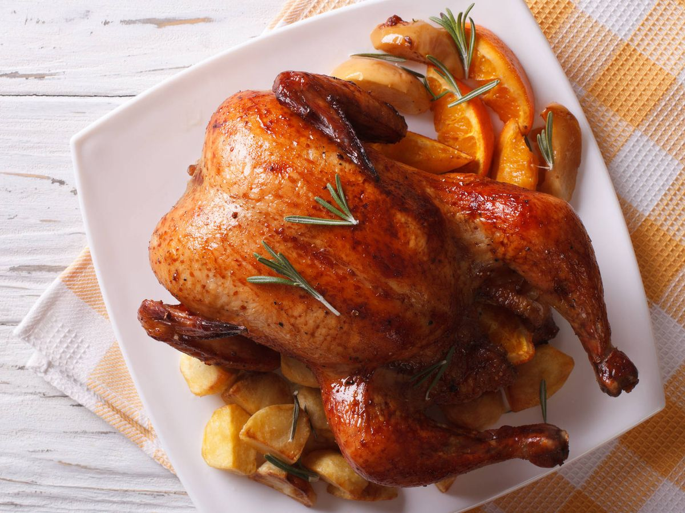

Pollo al horno
Receta de pollo al horno

Ingredientes
- Un pollo entero
- 2 patatas medianas
- Aceite de oliva
- Tomillo
- Romero
- Limón
- Vino Blanco
- Sal
Elaboración (Pasos)
- Precalentar el horno a 200º
- Mientras, marinar el pollo con limón y vino blanco
- Sazonar y aderezar con el tomillo y el romero
- Hornear por 25 minutos
Volver